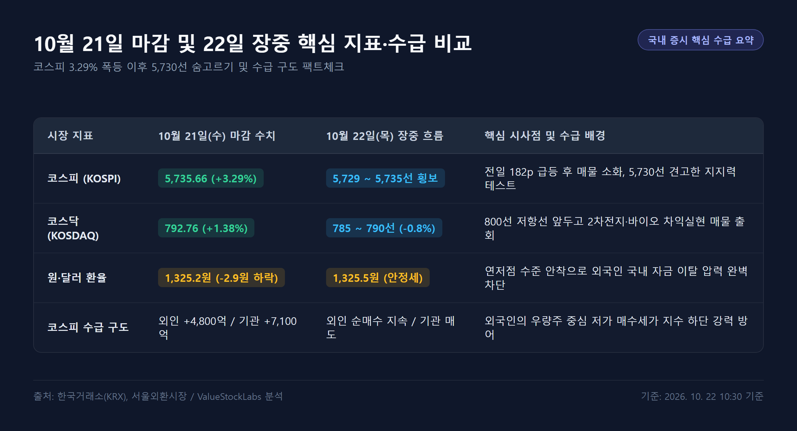
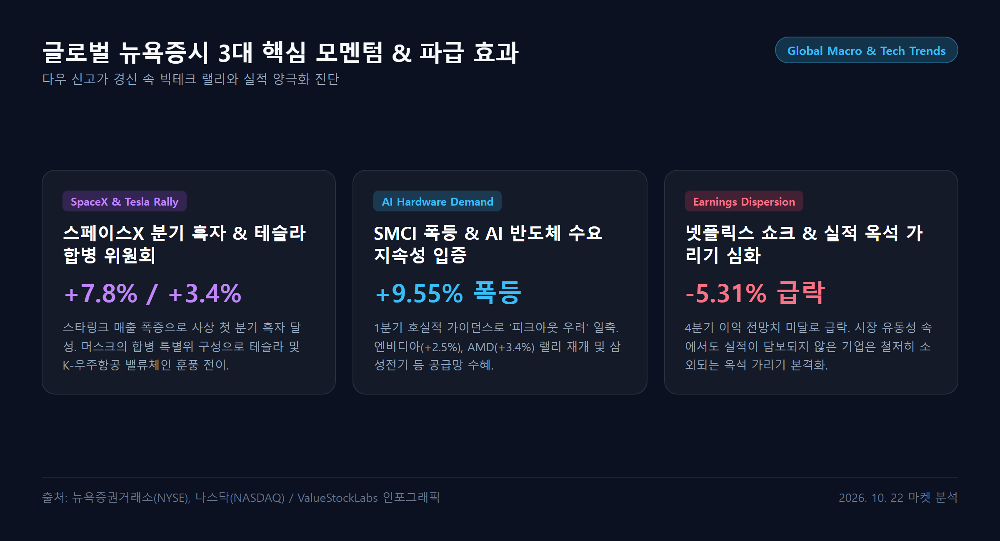
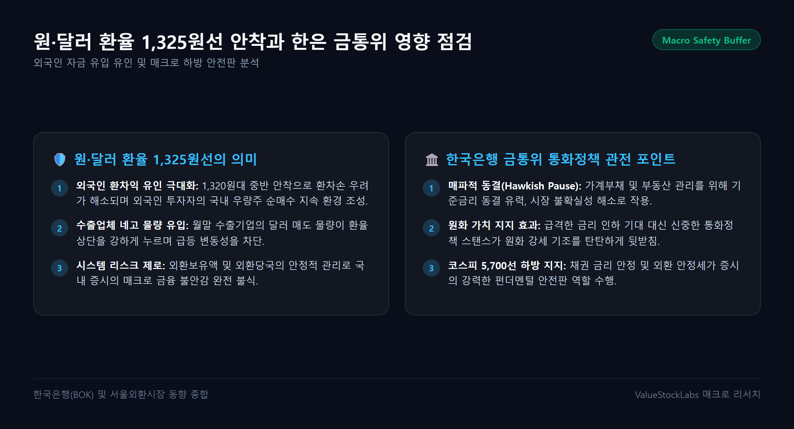
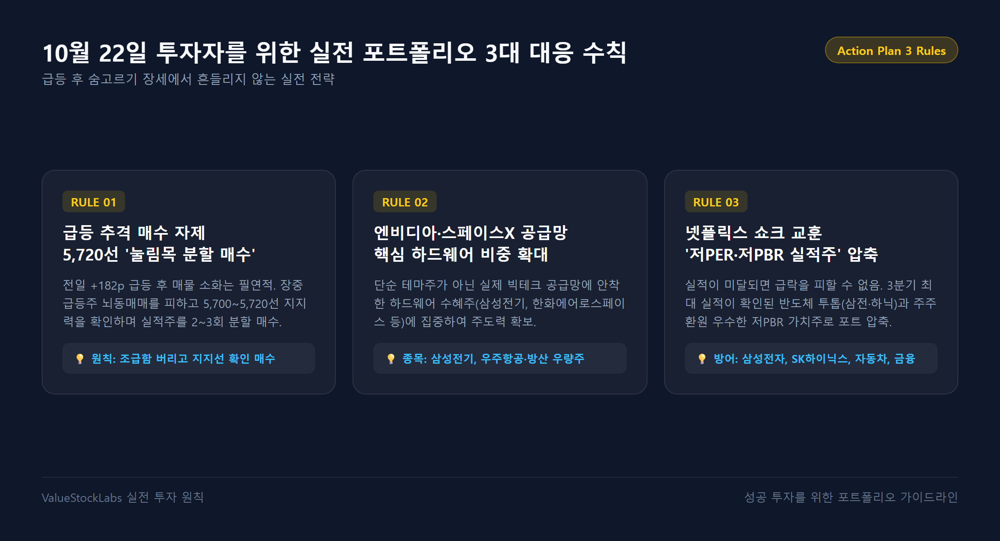

1. 전일 코스피 3.29% 폭등 총평과 22일 5,730선 숨고르기의 의미
10월 21일(수) 국내 증시는 직전 거래일의 과도했던 급락세를 단숨에 되돌리며 압도적인 V자 반등을 연출했습니다. 코스피는 하루 만에 +182.92포인트(+3.29%) 폭등한 5,735.66으로 마감하며 5,700선을 훌쩍 넘어섰고, 코스닥 지수 역시 +10.79포인트(+1.38%) 상승한 792.76을 기록하며 800선 턱밑까지 다가섰습니다.
특히 외국인과 기관이 각각 약 4,800억 원, 7,100억 원에 달하는 대규모 동반 순매수세를 유입시키며 지수를 강력하게 견인했습니다. 미국의 금리 부담 완화와 시간외 거래에서 터져 나온 슈퍼마이크로컴퓨터(SMCI)의 어닝 서프라이즈가 글로벌 반도체 투자심리를 급속히 해빙시킨 결과였습니다.
그러나 10월 22일(목) 오늘 장은 전일의 폭발적인 급등에 따른 피로감과 단기 차익실현 매물, 그리고 오늘 예정된 한국은행 금융통화위원회의 기준금리 결정을 앞둔 경계감으로 5,725~5,735선 안팎에서 숨고르기 공방을 펼치고 있습니다.

| 시장 지표 | 10월 21일(수) 마감 수치 | 10월 22일(목) 장중 흐름 | 핵심 배경 및 시사점 |
|---|---|---|---|
| 코스피 (KOSPI) | 5,735.66 (+3.29%) | 5,729 ~ 5,735 pt (보합권 횡보) | +182p 폭등 후 매물 소화, 5,730선 지지력 테스트 |
| 코스닥 (KOSDAQ) | 792.76 (+1.38%) | 785 ~ 790 pt (-0.8% 내외 조정) | 800선 저항 및 바이오·2차전지 차익 실현 출회 |
| 원·달러 환율 | 1,325.2원 (-2.9원 하락) | 1,325.5원 (안정적 흐름) | 연저점 안착으로 외국인 매도 이탈 유인 원천 차단 |
| 코스피 수급 구도 | 외인 +4,800억 / 기관 +7,100억 | 외인 순매수 지속 / 기관 단기 매도 | 외국인의 탄탄한 하단 방어 속 기관 차익 실현 팽팽 |
2. 글로벌 매크로 분석: 다우 최고치 경신과 스페이스X 흑자·테슬라 합병 모멘텀
간밤 뉴욕증시는 AI 모멘텀과 메가톤급 기업 이슈가 결합하며 3대 지수 모두 일제히 강세를 기록했습니다.
- 다우존스30 산업평균지수: 52,856.09 (+0.69%) 사상 최고치 경신 행진
- S&P 500 지수: 7,757.17 (+0.58%)
- 나스닥 종합지수: 26,702.86 (+1.05%) 1%대 급등 마감
- 필라델피아 반도체 지수: +1.97% 강한 상승 탄력

(1) 스페이스X 사상 첫 분기 흑자 & 테슬라 합병 기대감
우주 탐사 기업 스페이스X가 3분기 스타링크(Starlink) 매출 폭증에 힘입어 사상 첫 분기 흑자를 달성했다고 발표하며 주가가 +7.79% 폭등했습니다. 특히 일론 머스크 CEO가 테슬라와의 합병을 적극 검토하기 위해 '특별위원회'를 구성했다는 소식이 전해지면서, 테슬라 주가도 +3.41% 동반 급등하며 기술주 전반의 랠리를 촉발했습니다.
(2) SMCI(+9.55%)와 엔비디아(+2.50%)가 증명한 AI 수요 지속성
전일 시간외에서 폭등했던 슈퍼마이크로컴퓨터(SMCI)가 정규장에서도 +9.55% 폭등 마감했습니다. 1분기 가이던스 상향을 통해 'AI 서버 투자가 정점을 지났다(피크아웃)'는 비관론을 단숨에 잠재웠으며, 이에 따라 엔비디아(+2.50%), AMD(+3.36%), 마이크론(+2.8%) 등 핵심 반도체주들이 동반 랠리를 펼쳤습니다.
(3) 실적 기반 옥석 가리기 심화
반면, 넷플릭스는 4분기 영업이익 전망치 부진으로 -5.31% 급락했고, AT&T도 통신 가입자 정체로 -6.45% 하락했습니다. 이는 시장 유동성이 풍부해진 상황에서도 '확실한 실적과 명확한 성장 스토리'를 입증하지 못한 종목은 가차 없이 소외되는 양극화 장세가 본격화되었음을 보여줍니다.
3. 주도 섹터 팩트체크: 엔비디아 파트너십 삼성전기(+4%)와 반도체 투톱의 숨고르기
22일 오늘 국내 증시에서는 글로벌 빅테크 공급망 변화와 관련된 종목들이 지수 대비 독보적인 탄력을 과시하고 있습니다.
(1) 삼성전기 (+4.2%대 급등, 엔비디아 파트너십 부각)
오늘 장의 최고 주역은 삼성전기입니다. 엔비디아의 차세대 AI 가속기용 유리 기판(Glass Substrate) 및 초다층 고성능 FC-BGA(플립칩 볼그리드어레이) 공급을 위한 전략적 파트너십을 체결했다는 소식이 전해지며 장 초반부터 대규모 기관·외국인 매수세가 집중, +4% 이상의 급등세를 시현하고 있습니다.
(2) 삼성전자 & SK하이닉스 (건강한 기간조정 및 매물 소화)
전일 각각 +3.2%, +4.1% 폭등했던 국내 반도체 투톱은 오늘 차분한 숨고르기 장세를 이어가고 있습니다.
- 삼성전자: 21만 7,000원~21만 9,000원 선에서 외국인의 꾸준한 순매수 속에 하방 경직성을 굳히고 있습니다.
- SK하이닉스: 126만~128만 원 선에서 안착을 시도하고 있습니다. 미국 손자회사 솔리다임(Solidigm)의 나스닥 상장에 따른 지분 희석 논란이 가라앉고, 글로벌 eSSD 1위 지배력과 10월 말 3분기 사상 최대 실적 발표 기대감이 견고하게 주가를 지지하고 있습니다.
(3) 우주항공·방산 밸류체인 훈풍
스페이스X의 흑자 달성과 테슬라 합병 이슈는 국내 방산 및 우주항공주에도 강력한 훈풍을 불어넣고 있습니다. 한화에어로스페이스, 한국항공우주, 쎄트렉아이 등 핵심 우주 인프라 관련주들이 견조한 상승 흐름을 유지하고 있습니다.
4. 매크로 안전판 점검: 원·달러 환율 1,325원선 안착과 한은 금통위 관망
주식 시장의 중기 방향성을 결정짓는 매크로 지표 역시 매우 긍정적인 신호를 발신하고 있습니다.

(1) 원·달러 환율 1,325.2원의 철옹성 안전판
서울 외환시장에서 달러당 원화 환율은 전일 1,325.2원으로 마감하며 연저점 흐름을 확고히 굳혔습니다.
- 환율이 1,320원대 중반까지 내려온 것은 외국인 투자자에게 '환차익 매력'을 극대화시키는 구간입니다.
- 환율 안정이 지속되는 한, 외국인이 코스피 대형주를 대규모로 투매할 가능성은 극히 희박합니다.
(2) 한국은행 금융통화위원회 기준금리 결정의 영향
오늘 오전 발표될 한국은행 금통위의 통화정책 방향은 시장에 충격을 주기보다는 불확실성 해소로 작용할 가능성이 높습니다. 가계부채 억제와 외환시장 안정을 고려해 '기준금리 동결' 또는 '매파적 동결' 기조를 이어갈 것으로 전망되며, 이는 원화 가치를 지지하여 주식시장의 하방을 든든하게 받쳐줄 것입니다.
5. 10월 22일 투자자를 위한 실전 대응 3대 수칙
급등 이후 숨고르기가 이어지는 장세에서는 조급함을 버리고 철저한 원칙 매매로 임해야 합니다. 오늘 장에서 실천해야 할 3대 투자 수칙을 정리합니다.

수칙 1. 급등 추격 매수 자제, 5,720선 전후 '눌림목 분할 매수'
전일 +182p 급등 이후의 기간조정은 매우 자연스러운 손바꿈 과정입니다. 장중 상승하는 종목을 뇌동 추격 매수하지 말고, 5,700~5,720선의 하방 지지력을 확인하며 3분기 실적이 검증된 주도주를 분할 매수하십시오.
수칙 2. 엔비디아·스페이스X 공급망 핵심 하드웨어(삼성전기·방산) 비중 확대
글로벌 시장의 화두는 단순한 소프트웨어 기대감을 넘어 '실제 납품 실적이 나오는 하드웨어'로 이동하고 있습니다. 엔비디아 협력 모멘텀을 확보한 삼성전기와 스페이스X 밸류체인 수혜를 입는 K-우주항공·방산 우량주에 주목하십시오.
수칙 3. 넷플릭스 쇼크가 주는 교훈, '저PER·저PBR 실적주'로 포트폴리오 압축
넷플릭스의 5% 급락은 실적이 미달할 경우 주가 조정이 얼마나 가혹한지 경고합니다. 3분기 사상 최대 실적이 예고된 반도체 투톱(삼성전자·SK하이닉스)과 주주환원 여력이 풍부한 저PBR 가치주(현대차, KB금융)로 계좌의 무게중심을 확고히 잡으시길 바랍니다.